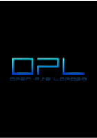

SONY
Open Ps2 Loader (OPL) v.2077
Prepare-se para uma aventura nostálgica! Open Ps2 Loader, gira em torno de Carl "CJ" Johnson, que retorna a Los Santos após cinco anos para o funeral de sua mãe, encontrando a cidade dominada por gangues, drogas e corrupção, e sua família desestruturada. Forçado por policiais corruptos, CJ embarca em uma jornada por todo o estado de San Andreas, tentando reconstruir sua gangue (Grove Street Families) e descobrir a verdade por trás dos problemas que afetam sua família e a cidade, enquanto luta contra inimigos e traições. .